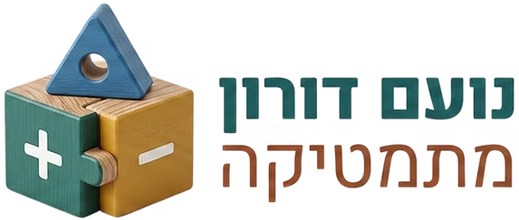

בית
דפי עבודה
הלמידה שלי
דילוג לדף העבודה ולעזרה
📄
דף עבודה
לכל דפי העבודה
כלי PDF
פתח PDF בלשונית
לחצו על 🤖 ליד שאלה כדי לקבל רמז
טוען את דף העבודה…
−
70%
+
התאם לרוחב
תצוגת PDF מלאה
הורדה / הדפסה
עזרה מרמזי
×
יש הערה על השאלה?